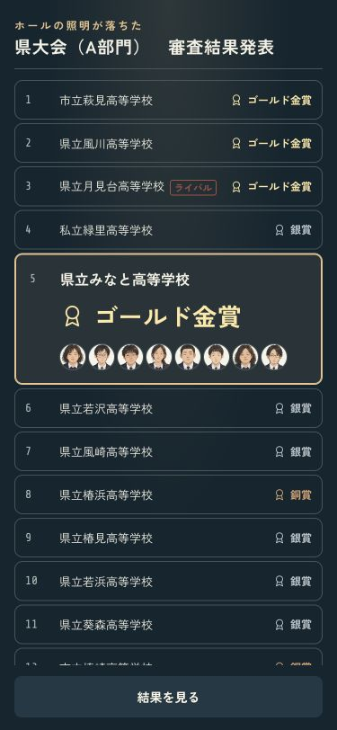
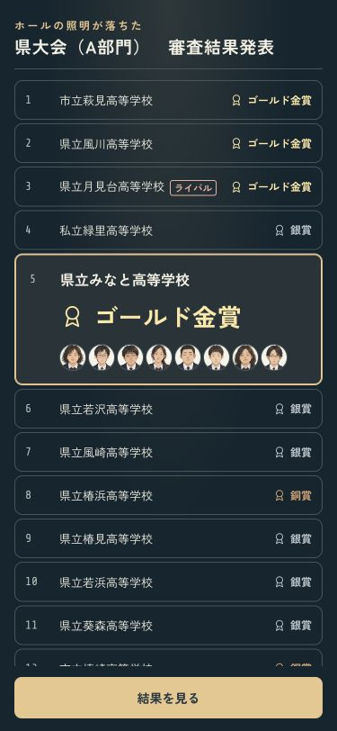
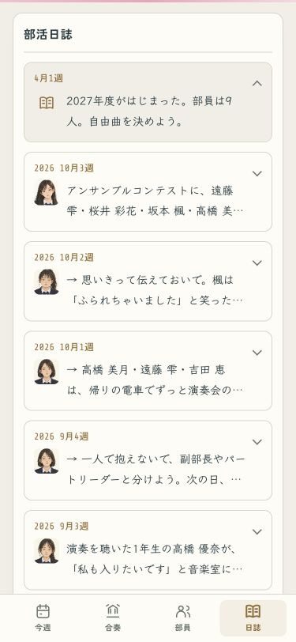
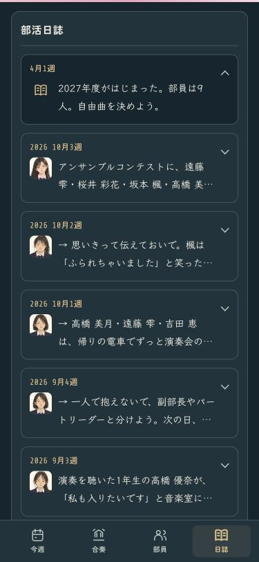

自分たちの結果と、顔の見える日誌
自分の学校の賞を大きくし、本番に出た部員の顔を添えました。日誌は日付ごとに開けるカードへ。部員の出来事を見出しにして、元の文章はすべて残しています。
結果発表 · 375px
発表の順番と、賞・代表が分かるタイミングはそのまま。顔は出場者から最大8人。上の大会名と下の「結果を見る」は、スクロールしても見える位置に置きました。
ライト設定 · ホールの紺の画面
ダーク設定
部活日誌 · 375px
矢印を押すと、その日の続きまで読めます。フルネームで本人を確かめられる記録だけ顔を添え、同姓同名の場合は顔を決めつけません。
ライト
ダーク
銀賞も同じように